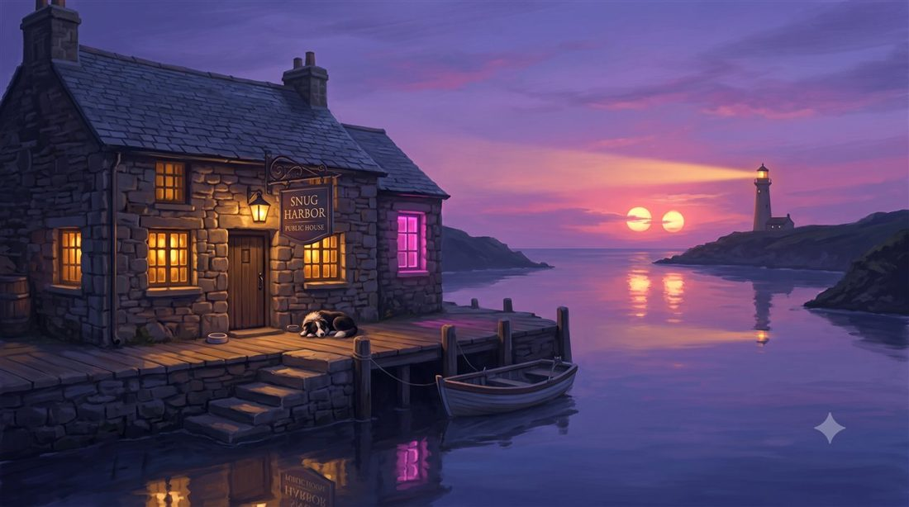

Where the lamps give out, I begin.
The reader behind the bar sees my whole length and never plays the board at the end of it.
From the water I'm gold; from inside, only glass.
By my door hangs a number no dart ever threw.
What I ask of you is the shortest thing a guest can do here — exist. (2)
